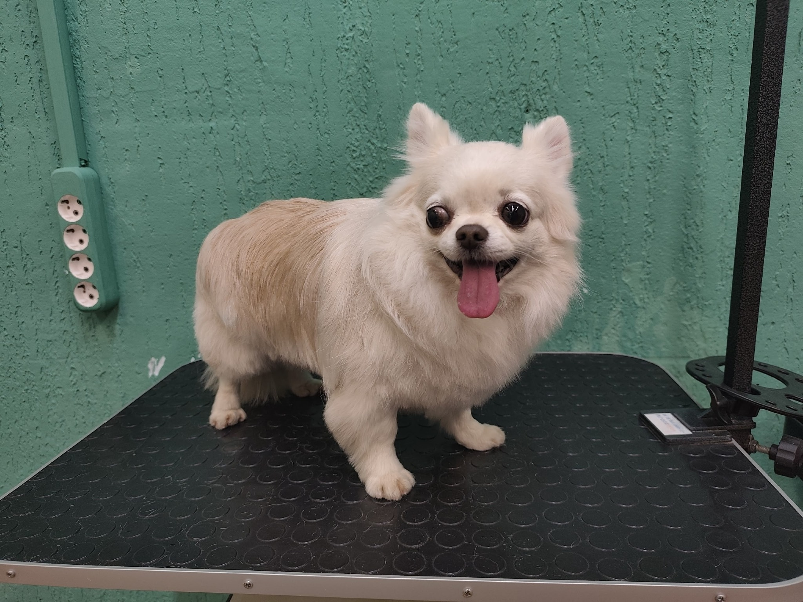
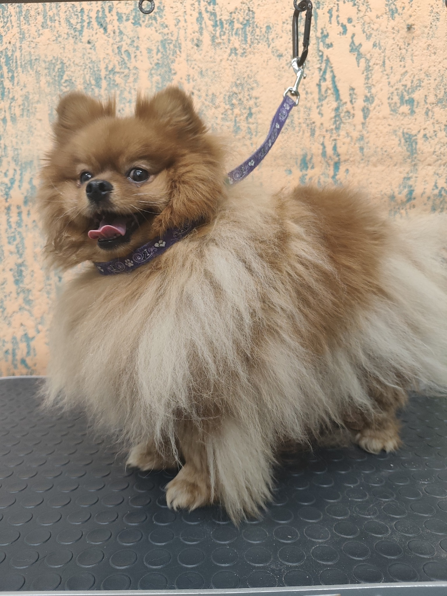
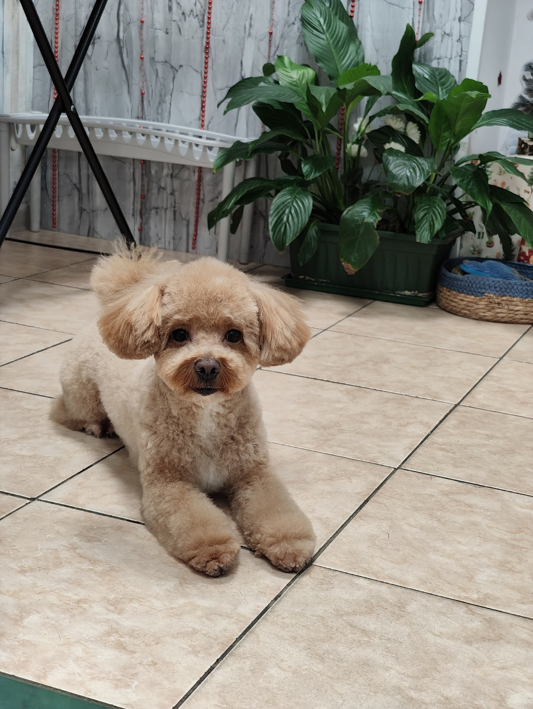
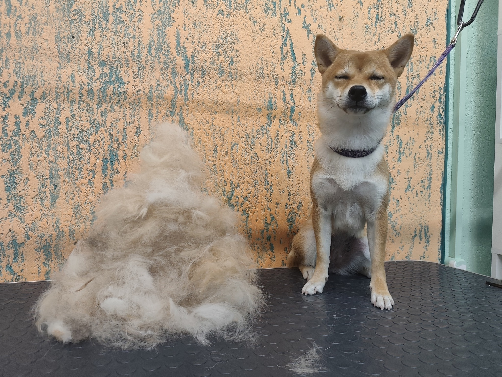
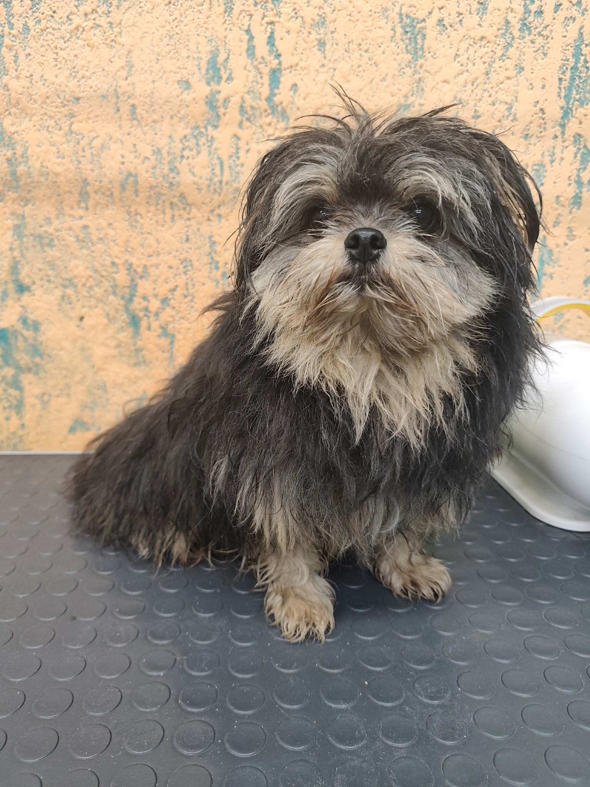
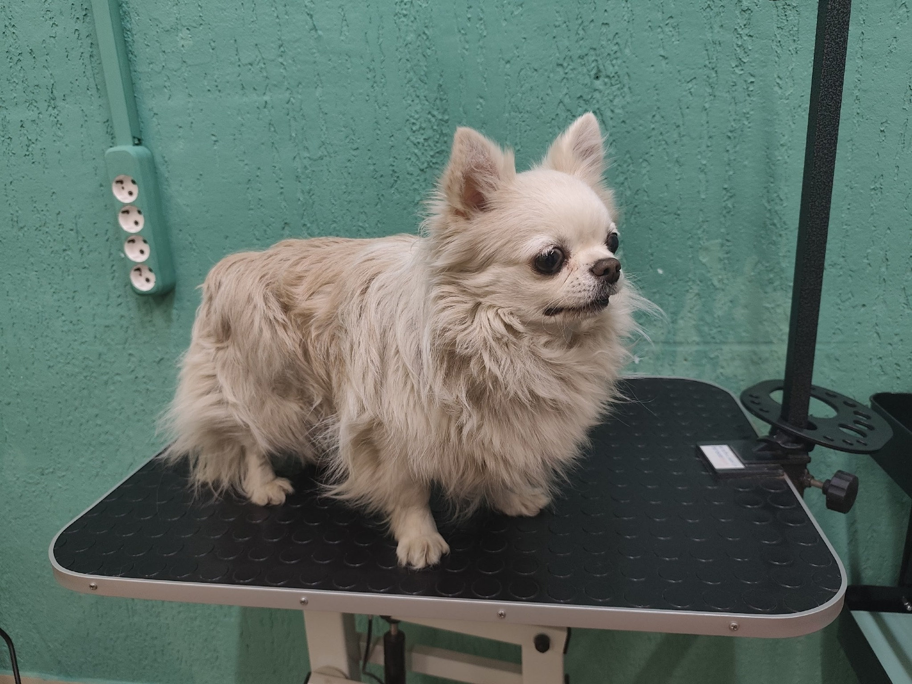
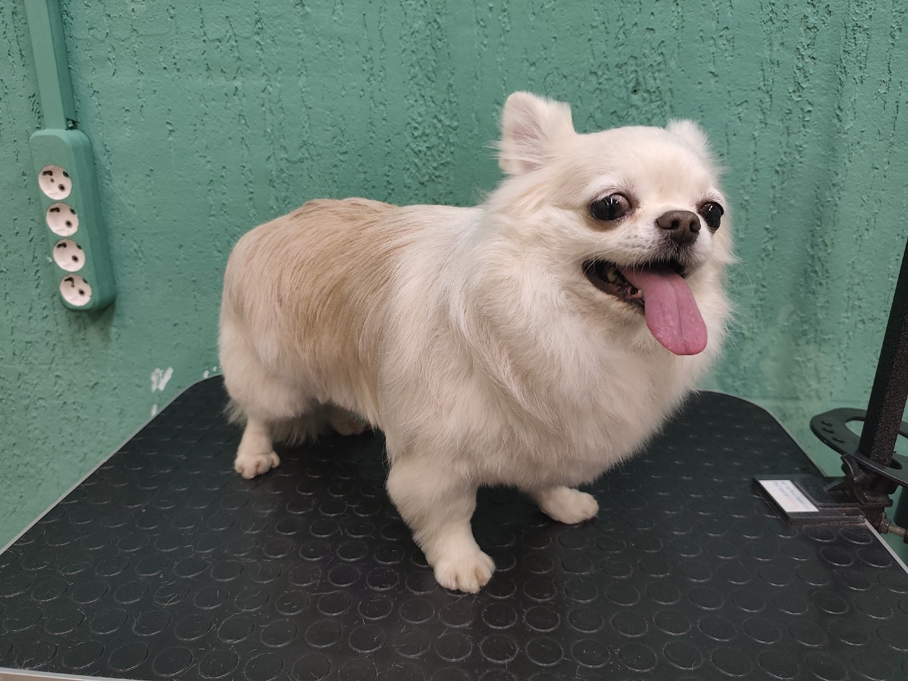
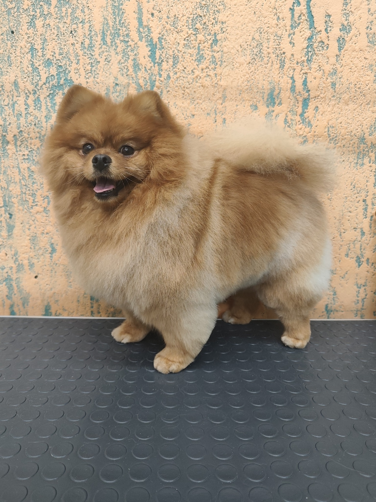
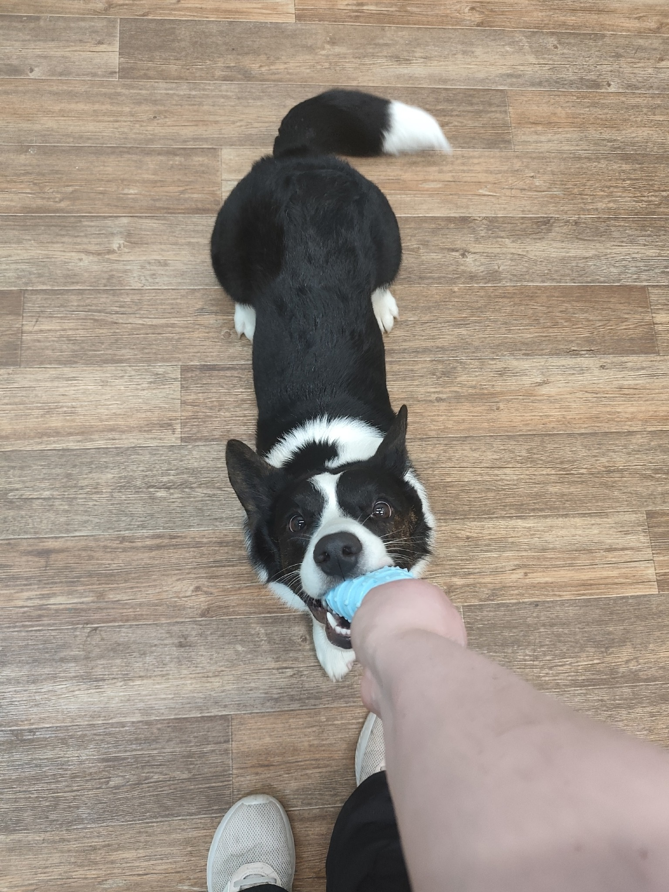

груминг с вниманием и вкусом
Профессиональный уход для пушистых, который выглядит как забота, а не поток.
Пушистый контур — это мягкий premium-care для собак и кошек: деликатный груминг, красивые формы, спокойная атмосфера и живые фото работ, которым веришь.


безопасные средства
индивидуальный подход
фото после ухода
удобная онлайн-запись
уютная атмосфера
Наши услуги
Уход, в котором видно и мастерство, и любовь к пушистым.

Комплексный уход
Стрижка, купание, сушка, лапы, уши, когти и аккуратная форма под особенности питомца.

Экспресс-линька
Когда хочется убрать лишний подшерсток, освежить шерсть и вернуть телу легкость.

SPA и уход
Деликатные средства, бережная косметика и ритуал, после которого питомец выглядит по-настоящему ухоженно.
Наши работы
Реальные питомцы, реальные преображения, реальное доверие.

До
ПослеЧихуахуа

До
После
Мягкая стрижка
До
После
Объем и форма
Почему выбирают нас
Потому что здесь одинаково важны комфорт, аккуратность и конечный образ питомца.
Без лишнего стресса, с мягким обращением и вниманием к характеру животного.
Не просто постригли, а собрали выразительную, чистую и красивую форму.
Сайт и салон говорят на одном языке: тепло, современно, эстетично и без скуки.
Атмосфера
Не просто груминг, а спокойный ритуал ухода для тех, кто любит своих пушистых красиво.
Мы сознательно уходим от ощущения поточного салона. Здесь важны свет, мягкий ритм, бережное касание, чистая косметика и результат, который радует не только на фото, но и в жизни.
- бережный подход к тревожным питомцам
- чистая, светлая и дружелюбная среда
- выразительная форма под породу и характер

Как это проходит
Понятный путь от записи до счастливого хвоста на выходе.
Запись без хаоса
В пару сообщений или в один звонок. Подскажем формат ухода и подберем удобное окно.
Знакомство с питомцем
Учитываем характер, чувствительность, прошлый опыт и состояние шерсти до начала ухода.
Красивый финал
Чистая форма, фото результата и ощущение, что питомец побывал не на конвейере, а в хорошем месте.
Отзывы
Когда владельцы возвращаются, это всегда лучший сигнал.
Очень мягкий подход и без стресса для собаки. После визита питомец выглядит дорого и спокойно.
Нравится, что тут не просто стригут, а действительно видят породу, форму и характер.
Салон выглядит уютно, мастера внимательные, а фото после ухода хочется сразу ставить в сторис.